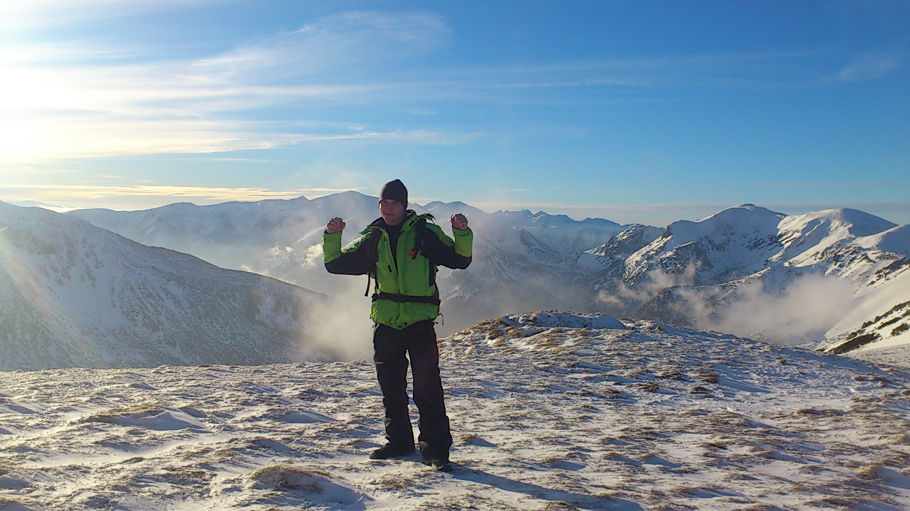
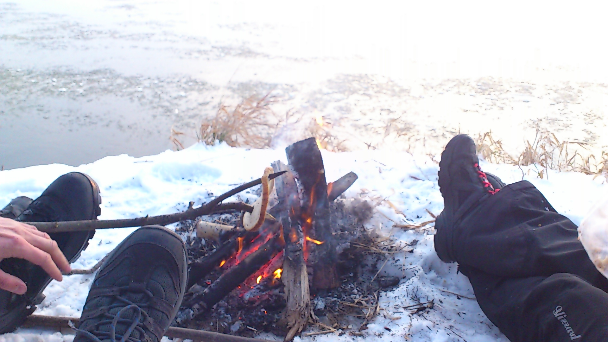
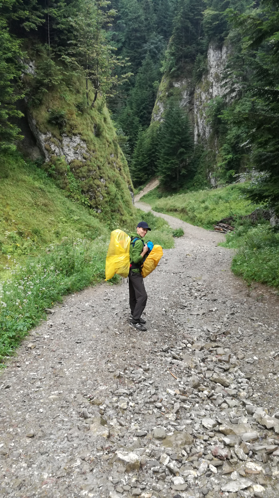
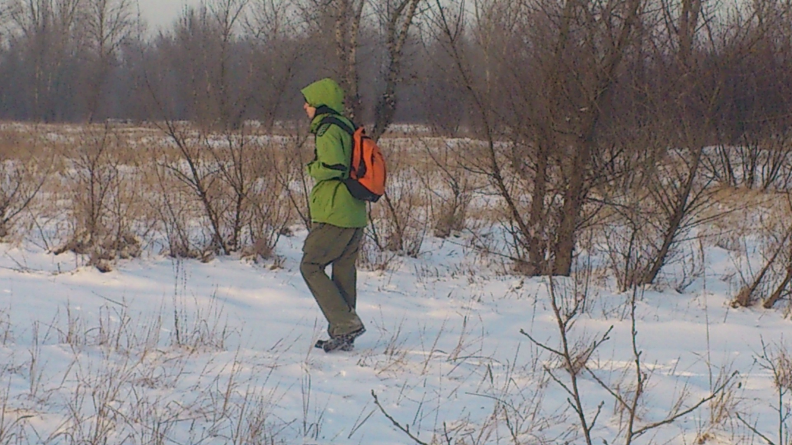
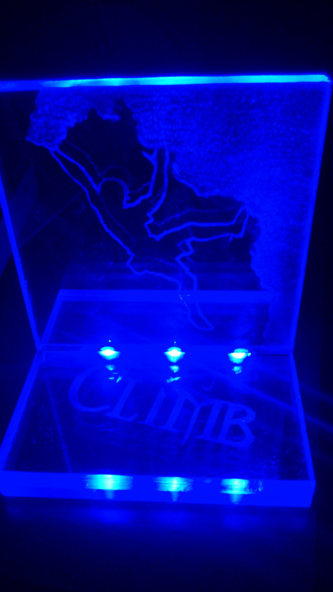
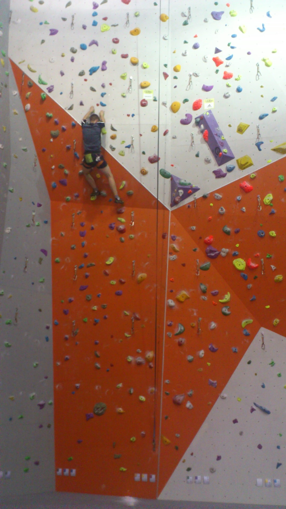

Moja pasja
Góry
Góry stały się moją pasją podczas studenckich letnich zajęć terenowych w Tatrach. Wtedy to zakochałem się w górach i od tamtego momentu staram się jeździć w nie przynajmniej dwa razy w roku bez względu na porę. Najchętniej na wycieczki wybieram się zimą, ponieważ moim zdaniem góry są wtedy najpiękniejsze. Do rozwijania mojej pasji motywują mnie również punkty GOT zdobywane za przebyte szlaki. Dzięki nim mam możliwość odwiedzania mało uczęszczanych terenów górskich.



Moje zainteresowania
Survival
Tematem survivalu zaraził mnie kolega z pracy. Przeczytałem pierwszą książkę, obejrzałem kilka filmów o tej tematyce na Youtube, również programy Bear'a Gryls'a stały się inspiracją do dalszego działania. Uwielbiam wyjeżdzać w dzicz, organizować obóz, rozpalać ognisko, poruszać się w terenie z mapą. Dzięki temu wiem jak przetrwać prawie w każdych warunkch. Z czasem zacząłem przekazywać moją wiedzę na zajęciach z survivalu dla dzieci.




Moje hobby
Modelarstwo/majsterkowanie
Początek mojego hobby sięga 1998 roku. Od kolegi dostałem miesięcznik "Mały Modelarz" z modelem samolotu dwupłatowego Focker II. Jak na pierwszy raz efekt mojej pracy był całkiem niezły. Spodobało mi się tworzenie modeli z płaskiej kartki. Z czasem nazbierało się ich około 30. W końcu "Mały Modelarz" stał się niewystarczający. Zaprojektowałem własny model samochodu typu picup i samodzielnie tworzę elementy do jego sklejania nie tylko z kartonu. Koleinym krokiem było grawerowanie. Zaczołem tworzyć lampki z wygrawerowanym wzorem na plexi.



Wolny czas
Wspinaczka
Moja przygoda ze wspinaczką zaczeła się na studiach, kiedy to wybrałem wspinaczkę jako przedmiot zajęć sportowych. Zajęcia trwały jeden semestr, ale już na początku stwierdziłem, że to mój świat. W wolnym czasie chodziłem na ścianki wspinaczkowe, aby doskonalić warsztat. Potem rozwijałem techniki wspinaczkowe na boulderze w garażu u znajomego. Aż w końcu przyszedł czas na wyjazd w skały na Jurę.


